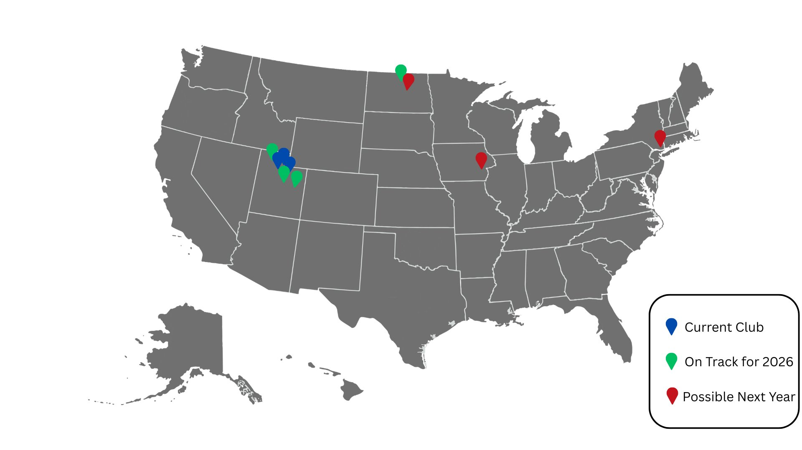
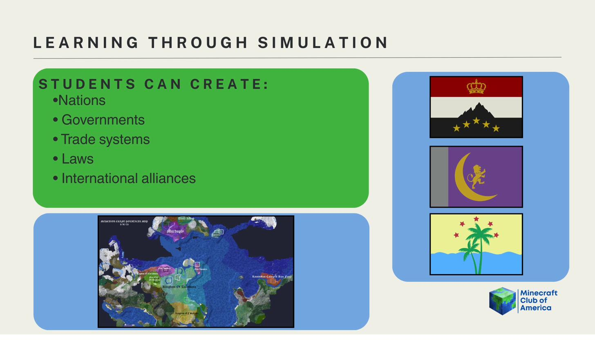

About Us
The Minecraft Club of America is a leadership and learning organization that uses Minecraft as a tool to explore government, economics, supply chains, decision-making, and leadership — while using the platform to foster community and promote a deeper understanding of other cultures.
Our motto: Trade · Build · Govern · Create.
The MCA welcomes everyone. No matter who you are, we'd love to have you. Our Discord is the main hub for server access, events, and announcements. If you want to be whitelisted and participate, that's the place to start.
We're governed by a Constitution ratified May 13, 2025 — complete with elections, a legislature, a judicial system, and an anti-cheat law passed in 2026.
The Club at a Glance

Learning Through Simulation
Members don't just play Minecraft — they build entire civilizations. On our servers, students form nations, draft constitutions, elect leaders, establish trade routes, and pass legislation. Everything is governed by real rules, real consequences, and real democratic processes.
- Nations — found and govern your own country with its own laws and flag
- Governments — draft constitutions, hold elections, and form alliances
- Trade systems — manage economies, resources, and supply chains
- Laws — propose and pass legislation through the World Congress
- International alliances — diplomacy, treaties, and wars between nations

Where We're Headed
The MCA is actively growing. By our 5th anniversary in 2026, we aim to have 8–10 clubs, 150–200 members, and chapters in at least two states. By our 10th anniversary, we're aiming for 50 clubs, 500–600 members, and a presence in at least ten states.